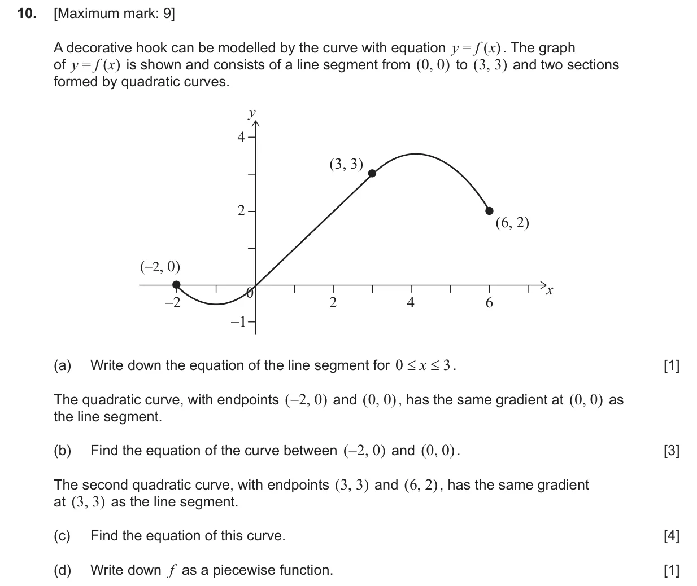
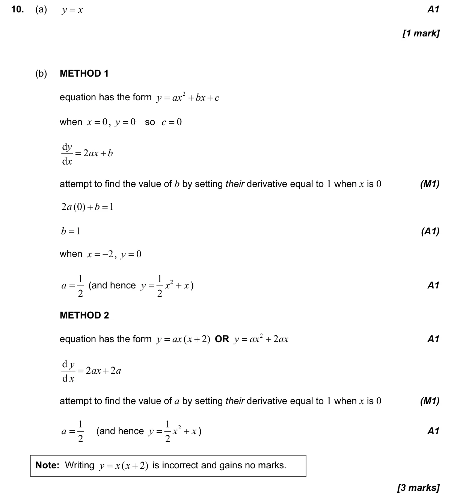
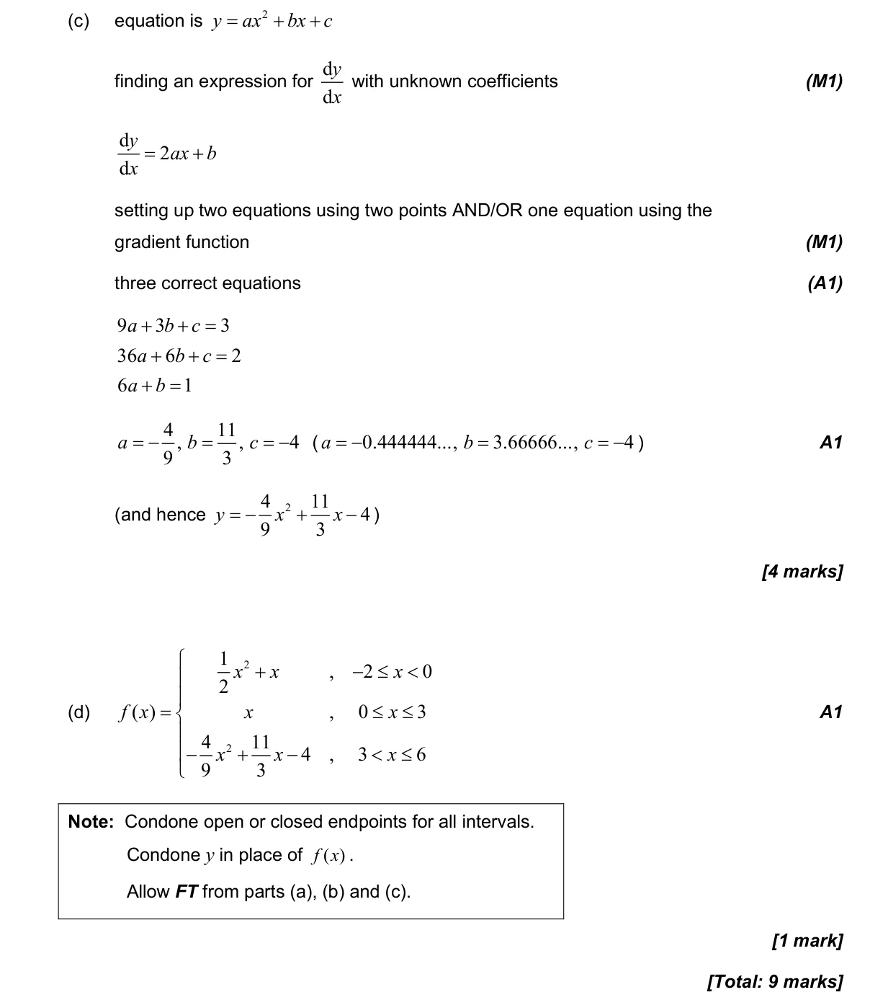

9 marks P1 TZ1 Calculator 5.3 Differentiating polynomials, n in Z2.6 The modelling process: choose, fit, test and use a model1.8 Solving linear systems and polynomial equations with technology2.1 Equations of straight lines, parallel and perpendicular2.9 Further models: half-life, logarithmic, sinusoidal, logistic and piecewise Question Hide breakdown abcd Markscheme 